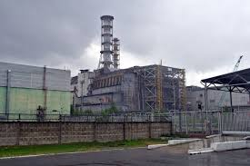

24/7 Emergency Restoration Specialists
We are a full-service restoration and cleaning company delivering reliable emergency and reatoration service 24 hours days, 7 days a week.
Evacuation Hack: Emergency Restoration
When a major storm or hurricane is on the horizon, it is always best to follow evacuation order if your country authorities advice you to do so. While following basic tips like placing your valuables high that you cannot take with you and securing patio furniture, did you ever think of your refrigerator?
Is the food safe when you return?
If the electric goes out, the contents of a freezer can completely thaw out spoiling all of your groceries.
There may even be enough time for this spoiled food to completely refreeze again making it hard to tell if your freezer and refrigerated items are safe for consumption. How will you know?
Evacuation Tip!
Next time, while packing and preparing for the evacuation, freeze a cup of water. After the the water is frozen, place a quarter on the top of the water and put it back into the freezer.
After returning home from the evacuation, if you find the quarter has moved to the bottom of the cup, then you'll know your power was out long enough to unthaw your frozen goods. This food should be thrown away.
If you find your quarter in the middle, you know the power did go out, but not long enough to completely thaw the cup of water. Use your own discretion for discarding food if this is the case.
Is the quarter still on top? That means your freezer's contents stayed frozen the entire time. All of your refrigerated goods are safe for consumption!
Remember to always follow authority guidelines for returning back to your home or business during an evacuation. If you've experienced any damage to your business, multi-family property, or campus. -please call RMC's 24/7 emergency intake line!